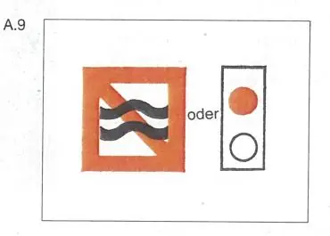

§ 6.20 Vermeidung von Wellenschlag
Rheinschiffahrtspolizeiverordnung
1. | Fahrzeuge müssen ihre Geschwindigkeit so einrichten, daß Wellenschlag oder Sogwirkungen, die Schäden an stilliegenden oder in Fahrt befindlichen Fahrzeugen oder Schwimmkörpern oder an Anlagen verursachen können, vermieden werden. Sie müssen ihre Geschwindigkeit rechtzeitig vermindern, jedoch nicht unter das Maß, das zu ihrer sicheren Steuerung notwendig ist: | ||
a) | vor Hafenmündungen; |  | |
b) | in der Nähe von Fahrzeugen, die am Ufer oder an Landebrücken festgemacht sind oder die laden oder löschen; | ||
c) | in der Nähe von Fahrzeugen, die auf den üblichen Liegestellen stilliegen: | ||
d) | in der Nähe nicht frei fahrender Fähren; | ||
e) | auf Strecken der Wasserstraße, die durch das Zeichen A.9 (Anlage 7) gekennzeichnet sind. | ||
2. | Gegenüber Kleinfahrzeugen besteht die Verpflichtung nach Nummer 1 Satz 2 Buchstabe b und c nicht; § 1.04 bleibt unberührt. | ||
3. | Beim Vorbeifahren an Fahrzeugen, die die Bezeichnung nach § 3.25 Nr. 1 Buchstabe c führen, | ||
und an Fahrzeugen, Schwimmkörpern oder schwimmenden Anlagen, die die Bezeichnung nach § 3.29 Nr. 1 führen, | |||
müssen andere Fahrzeuge ihre Geschwindigkeit, wie in Nummer 1 vorgeschrieben, vermindern. Sie haben außerdem möglichst weiten Abstand zu halten. |